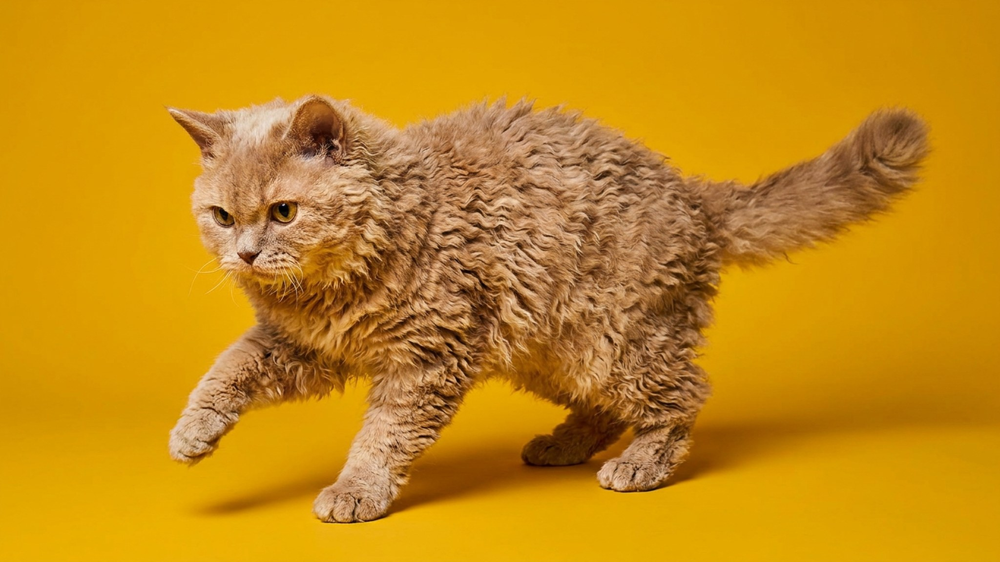

Многие берут селкирк-рекса за внешность — кудряшки как у плюшевой игрушки. Остаются — за характер: этот кот ходит за хозяином буквально по пятам и требует тактильного контакта почти постоянно. Кудрявая шерсть красивая, но со своими правилами ухода: нарушишь — завитки превратятся в войлок.
Селкирк-рекс — одна из самых контактных пород. Кошка не просто терпит объятия, она их ищет. Порода крупная, спокойная, без гиперактивности — любит лежать рядом, а не устраивать погром. При этом она любопытна и неплохо уживается с детьми и другими животными, если социализация была с детства.
🐾 Питомец ведёт себя странно?
AnimaLife расшифрует поведение кошки и собаки и подскажет, что делать. Попробуйте бесплатно прямо в мессенджере.
Кудрявая шерсть селкирк-рекса — мутация гена, которая меняет структуру волоса. Из-за этого завитки легко спутываются и плохо переносят стандартные процедуры ухода.
Порода хорошо вписывается в домашний ритм людей, которые проводят дома бо́льшую часть времени. Если хозяин часто в командировках — кошке будет тяжело. Селкирк-рекс — выбор для тех, кто хочет тёплого, тихого, непритязательного к активности компаньона, но готов уделить внимание шерсти.
Подходит аллергикам? Нет. Несмотря на кудряшки, порода не гипоаллергенна — аллерген содержится в слюне и коже, а не в шерсти как таковой. Это важно уточнить до покупки.
Селкирк-рекс в целом крепкая порода, но как и у многих плюшевых пород — склонна к накоплению жира и набору лишнего веса. Следите за рационом и не перекармливайте. Регулярный осмотр у ветеринара раз в полгода позволяет вовремя заметить изменения в состоянии кожи, шерсти и ушей. Расскажите врачу о жирности кожи и особенностях шерсти — специалист поможет подобрать правильный уход и рацион.
Материал носит информационный характер и не заменяет очную консультацию ветеринара.
🐾 Здоровье питомца под контролем
AI-ветеринар, дневник здоровья и персональные советы для вашего питомца — установите AnimaLife бесплатно.
🐾 Понравился разбор?
Подпишитесь на канал — каждый день разбираем по одному тревожному симптому у кошек и собак: что в пределах нормы, а когда пора к врачу. Подпишитесь, чтобы не пропустить разбор, который может спасти здоровье вашего питомца.